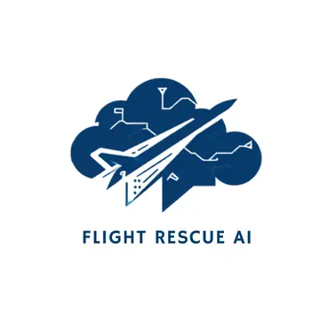

Flight scenario
Analyze disruption risk
Tell us the flight. You do not need to know airport codes or enter weather measurements — FlightRescue retrieves the official NWS forecast for OGG automatically.

FLIGHT RESCUE AIAI-powered disruption intelligence · Kahului, Maui
Flight Rescue AI combines official National Weather Service forecasts, historical OGG operations, Hawaii storm events and machine learning to estimate disruption risk and compare how airlines performed in similar past conditions.
Flight scenario
Tell us the flight. You do not need to know airport codes or enter weather measurements — FlightRescue retrieves the official NWS forecast for OGG automatically.
AI assessment
Choose your route, date and time, then select Analyze Risk.
Historical analog engine
FlightRescue matches the NWS weather category to historical Maui/OGG NOAA events, then summarizes BTS delay and cancellation behavior for the selected airline and its peers.
NWS forecast values at OGG are automatically converted into the meteorological inputs used by the trained model.
Search airports by code, full name, city or state; the model derives whether the flight is arriving at or departing from OGG.
Historical event windows are summarized by airline using BTS delay, cancellation and severe-disruption outcomes.
Model risk and historical analog evidence are shown separately so the app does not disguise heuristic context as a trained probability.